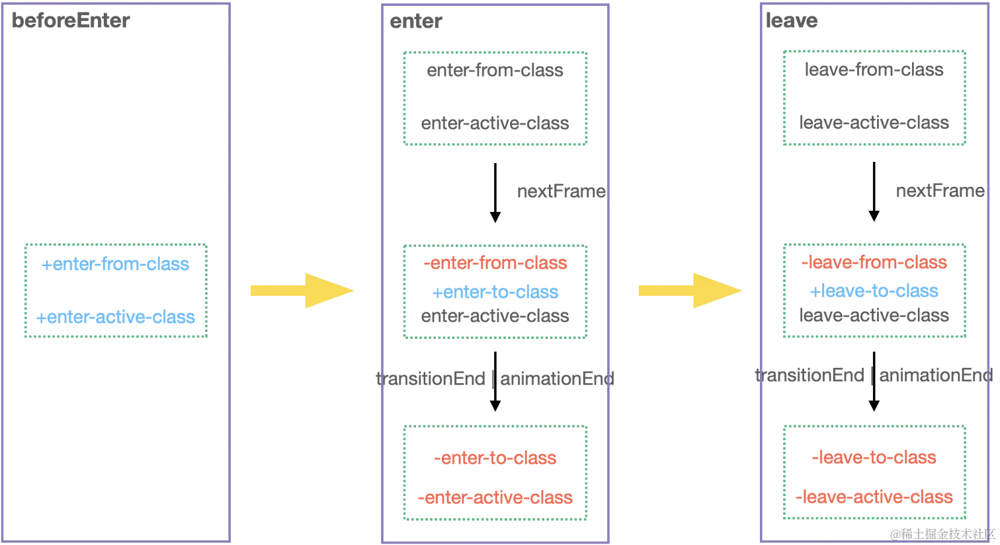

前言
Vue 内置了 Trasition 组件可以帮助我们快速简单的实现基于状态变换的动画效果。该组件支持了 CSS 过渡动画、CSS 动画、Javascript 钩子 几种模式，接下来我们将逐步介绍这几种模式的实现原理。
基于 CSS 的过渡效果
我们先来看官网上一个简单的关于 CSS Transiton 过渡动画的示例：
以下是最基本用法的示例：
html复制代码<template>
<button @click="show = !show">Toggle</button>
<Transition>
<p v-if="show">hello</p>
</Transition>
</template>
<style>
.v-enter-active,
.v-leave-active {
transition: opacity 0.5s ease;
}
.v-enter-from,
.v-leave-to {
opacity: 0;
}
</style>
然后再来看看官网上对于这些类名的实现定义：
v-enter-from：进入动画的起始状态。在元素插入之前添加，在元素插入完成后的下一帧移除。v-enter-active：进入动画的生效状态。应用于整个进入动画阶段。在元素被插入之前添加，在过渡或动画完成之后移除。这个class可以被用来定义进入动画的持续时间、延迟与速度曲线类型。v-enter-to：进入动画的结束状态。在元素插入完成后的下一帧被添加 (也就是v-enter-from被移除的同时)，在过渡或动画完成之后移除。v-leave-from：离开动画的起始状态。在离开过渡效果被触发时立即添加，在一帧后被移除。v-leave-active：离开动画的生效状态。应用于整个离开动画阶段。在离开过渡效果被触发时立即添加，在过渡或动画完成之后移除。这个 class 可以被用来定义离开动画的持续时间、延迟与速度曲线类型。v-leave-to：离开动画的结束状态。在一个离开动画被触发后的下一帧被添加 (也就是v-leave-from被移除的同时)，在过渡或动画完成之后移除。
抛开源码不谈，如果在一个普通的 Vue 组件中，我们如何实现一个上述功能的过渡状态的 CSS 动画效果呢？按照官网上的定义，我们一起来尝试一下：

可以看到，我们参考官网的描述，也可以简单的实现一个基于 css 的过渡动画，但这里存在了几个问题：
- 硬编码了
transiton动画，没有实现animate动画。 - 不够抽象，难以复用到后续组件。
接下来我们一起来看看 Vue 源码是如何实现的，首先找到关于 Transition 组件的定义：
js复制代码export const Transition = (props, { slots }) => h(BaseTransition, resolveTransitionProps(props), slots)
Transition.displayName = 'Transition'
代码很简单，Transition 组件是一个函数式组件，本身就是一个渲染函数。还记得我们之前说过吗，Vue 组件分为了有状态组件和函数组件，有状态组件内部会存储组件的状态，而函数组件不会。
我们知道 Vue 对 Transtion 内置组件的功能定义就是只是一个容器，一个搬运工，需要渲染 DOM，那就不需要 template，本身不需要维护任何状态。所以这里直接通过一个函数式组件定义了 Transition 组件。
接着，我们看到了该组件核心功能就是一个渲染 BaseTransition 组件，并为期传入处理好的 props 和内部挂载的 slot。先来看看 BaseTransition 组件，这里我们只关心与 CSS 动画相关的逻辑。
js复制代码const BaseTransitionImpl = {
name: `BaseTransition`,
props: {
// ...
},
setup(props, { slots }) {
// 当前渲染的组价实例
const instance = getCurrentInstance()!
const state = useTransitionState()
return () => {
/**
* 这里都是进入状态需要定义的内容
*/
// 获取子节点
const children =
slots.default && getTransitionRawChildren(slots.default(), true)
if (!children || !children.length) {
return
}
let child = children[0]
// 这里 props 不需要响应式追踪，为了更好的性能，去除响应式
const rawProps = toRaw(props)
const { mode } = rawProps
// 获取当前的容器节点
const innerChild = getKeepAliveChild(child)
if (!innerChild) {
return emptyPlaceholder(child)
}
// 获取进入状态的调用函数
const enterHooks = resolveTransitionHooks(
innerChild,
rawProps,
state,
instance
)
// 为子节点添加进入 hooks 属性
setTransitionHooks(innerChild, enterHooks)
/**
* 下面都是离开状态需要定义的内容
*/
// 离开状态中，之前的节点就是旧节点了
const oldChild = instance.subTree
const oldInnerChild = oldChild && getKeepAliveChild(oldChild)
let transitionKeyChanged = false
if (
oldInnerChild &&
oldInnerChild.type !== Comment &&
(!isSameVNodeType(innerChild, oldInnerChild) || transitionKeyChanged)
) {
// 获取离开状态的调用函数
const leavingHooks = resolveTransitionHooks(
oldInnerChild,
rawProps,
state,
instance
)
// 为子节点添加离开 hooks 属性
setTransitionHooks(oldInnerChild, leavingHooks)
// out-in 模式状态切换
if (mode === 'out-in') {
state.isLeaving = true
// 返回空的占位符节点，当离开过渡结束后，重新渲染组件
leavingHooks.afterLeave = () => {
state.isLeaving = false
// 当 active = false 时，被卸载状态不需要更新
if (instance.update.active !== false) {
instance.update()
}
instance.update()
}
return emptyPlaceholder(child)
} else if (mode === 'in-out' && innerChild.type !== Comment) {
// in-out 模式状态切换，延迟移除
leavingHooks.delayLeave = (el, earlyRemove, delayedLeave) => {
// 先缓存需要移除的节点
const leavingVNodesCache = getLeavingNodesForType(
state,
oldInnerChild
)
leavingVNodesCache[String(oldInnerChild.key)] = oldInnerChild
el._leaveCb = () => {
earlyRemove()
el._leaveCb = undefined
delete enterHooks.delayedLeave
}
enterHooks.delayedLeave = delayedLeave
}
}
}
// 返回子节点
return child
}
}
}
可以看到 BaseTransitionImpl 的 setup 函数，核心就干了三件事儿：
Step 1: 为 Transition 下的子节点添加 enterHooks。
Step 2: 为 Transition 下的子节点添加 leavingHooks。
Step 3: 处理完成后直接返回子节点作为渲染内容。
那么，这些 hooks 到底做了些什么？以及这些 hooks 是在什么时候被执行的呢？我们一个个来看。
1. hooks 到底做了些什么？
要回答这些 hooks 到底做了什么？首先需要了解这些 hooks 是从哪里来的。再回到上述源码，我们知道 hooks 是通过：
js复制代码const leavingHooks = resolveTransitionHooks(
oldInnerChild,
rawProps,
state,
instance
)
这样的函数调用产生的，现在我们先不讨论这个函数的具体实现，先看看该函数的入参，有一个 rawProps 的参数，这个就是上文所说的 Transition 组件 render 函数中传入的 props 参数。
接下来就需要分析 props 中有些什么东西：
js复制代码function resolveTransitionProps(rawProps) {
const baseProps = {}
// ...
for (const key in rawProps) {
if (!(key in DOMTransitionPropsValidators)) {
baseProps[key] = rawProps[key]
}
}
const {
name = 'v',
type,
duration,
enterFromClass = `${name}-enter-from`,
enterActiveClass = `${name}-enter-active`,
enterToClass = `${name}-enter-to`,
appearFromClass = enterFromClass,
appearActiveClass = enterActiveClass,
appearToClass = enterToClass,
leaveFromClass = `${name}-leave-from`,
leaveActiveClass = `${name}-leave-active`,
leaveToClass = `${name}-leave-to`
} = rawProps
// ...
return extend(baseProps, {
onEnter: makeEnterHook(false),
onLeave: () => {},
// ....
})
}
根据我们前面了解到的，Vue 会在特定阶段为节点增加或删除特定 class。而这个 props 正式为了所谓的 特定的阶段 量身打造的 钩子 函数。举个例子，我们需要实现进入节点的 v-enter-from、v-enter-active、v-enter-to 类名的添加，我们只需要在 onEnter 进入钩子内实现逻辑：
scss复制代码const makeEnterHook = (isAppear) => {
return (el, done) => {
// 移除 v-enter-to、v-enter-active 类名
const resolve = () => finishEnter(el, isAppear, done)
// 下一帧渲染时
nextFrame(() => {
// 删除 v-enter-from 类名
removeTransitionClass(el, isAppear ? appearFromClass : enterFromClass)
// 添加 v-enter-to 类名
addTransitionClass(el, isAppear ? appearToClass : enterToClass)
// 动画结束时，执行 resolve 函数，即删除 v-enter-to、v-enter-active 类名
if (!hasExplicitCallback(hook)) {
whenTransitionEnds(el, type, enterDuration, resolve)
}
})
}
}
这里的流程是不是跟上面的描述一毛一样！
2. hooks 何时执行？
前面我们提到 hooks 将会在特定时间执行，用来对 class 进行增加或删除。比如 enter-from 至 enter-to 阶段的过渡或者动画效果的 class 被添加到DOM 元素上。考虑到 Vue 在 patch 阶段已经有生成对应的 DOM （只不过还没有被真实的挂载到页面上而已）。所以我们只需要在 patch 阶段做对应的 class 增删即可。
比如进入阶段的钩子函数，将会在 mountElement 中被调用：
js复制代码// 挂载元素节点
const mountElement = (vnode,...args) => {
let el;
let vnodeHook;
const { type, props, shapeFlag, transition, patchFlag, dirs } = vnode;
// ...
if (needCallTransitionHooks*) {
// 执行 beforeEnter 钩子
transition.beforeEnter(el);
}
// ...
if ((vnodeHook = props && props.onVnodeMounted) || needCallTransitionHooks || dirs) {
// post 各种钩子 至后置执行任务池
queuePostRenderEffect(() => {
// 执行 enter 钩子
needCallTransitionHooks && transition.enter(el);
}, parentSuspense);
}
};
离开阶段的钩子函数，在 remove 节点的时候被调用：
js复制代码// 移除 Vnode
const remove = vnode => {
const { type, el, anchor, transition } = vnode;
// ...
const performRemove = () => {
hostRemove(el);
if (transition && !transition.persisted && transition.afterLeave) {
// 执行 afterLeave 钩子
transition.afterLeave();
}
};
if (vnode.shapeFlag & 1 ShapeFlags.ELEMENT && transition && !transition.persisted) {
const { leave, delayLeave } = transition;
// 执行 leave 钩子
const performLeave = () => leave(el, performRemove);
if (delayLeave) {
// 执行 delayLeave 钩子
delayLeave(vnode.el, performRemove, performLeave);
}
else {
performLeave();
}
}
};
为了更加清晰的看懂这个流程，我画了个状态流转图，可以简单看一下，方便理解：

JavaScript 钩子
<Transition> 组件在动画过渡的各个阶段定义了很多钩子函数，我们可以通过在钩子函数内部自定义实现各种动画效果。
html复制代码<Transition
@before-enter="onBeforeEnter"
@enter="onEnter"
@after-enter="onAfterEnter"
@enter-cancelled="onEnterCancelled"
@before-leave="onBeforeLeave"
@leave="onLeave"
@after-leave="onAfterLeave"
@leave-cancelled="onLeaveCancelled"
>
<!-- ... -->
</Transition>
前面其实已经稍微提及到了部分钩子函数，比如 onEnter，这些钩子函数在源码中会被合并到 Transiton 下子节点的 transition 属性上。这块的实现主要是通过 setTransitionHooks 函数来实现的：
js复制代码const BaseTransitionImpl = {
name: `BaseTransition`,
props: {
// ...
},
setup(props, { slots }) {
return () => {
// 获取进入状态的调用函数
const enterHooks = resolveTransitionHooks(
innerChild,
rawProps,
state,
instance
)
// 为子节点添加进入 hooks 属性
setTransitionHooks(innerChild, enterHooks)
// ...
// 返回子节点
return child
}
}
}
// 为 vnode 添加 transition 属性
function setTransitionHooks(vnode, hooks) {
// ...
vnode.transition = hooks
}
其中 hooks 包含了哪些内容呢？hooks 其实是通过 resolveTransitionHooks 函数调用生成的：
js复制代码export function resolveTransitionHooks(vnode, props, state, instance) {
// 传入的各个钩子函数
const {
appear,
mode,
persisted = false,
onBeforeEnter,
onEnter,
onAfterEnter,
onEnterCancelled,
onBeforeLeave,
onLeave,
onAfterLeave,
onLeaveCancelled,
onBeforeAppear,
onAppear,
onAfterAppear,
onAppearCancelled
} = props
// 定义调用钩子函数的方法
const callHook = (hook, args) => {
hook &&
callWithAsyncErrorHandling(
hook,
instance,
ErrorCodes.TRANSITION_HOOK,
args
)
}
// 钩子函数定义
const hooks = {
mode,
persisted,
beforeEnter(el) {
let hook = onBeforeEnter
// ...
// 执行 onBeforeEnter
callHook(hook, [el])
},
enter(el) {
let hook = onEnter
// ...
// 执行 onEnter
callAsyncHook(hook, [el, done])
},
leave(el, remove) {
// ...
// 执行 onBeforeLeave
callHook(onBeforeLeave, [el])
const done = (el._leaveCb = (cancelled?) => {
// ...
// 执行 onLeave
callAsyncHook(onLeave, [el, done])
})
},
clone(vnode) {
return resolveTransitionHooks(vnode, props, state, instance)
}
}
return hooks
}
一个最基础的 hooks 主要包含 beforeEnter、enter、leave 这几个阶段，将会在 patch 的环节中被执行，执行的逻辑就是 Vue 官网上描述的逻辑。
另外，值得注意的是，除了这几个关键阶段之外，Transiton 还支持一个 mode 来指定动画的过渡时机，举个例子，如果 mode === 'out-in'，先执行离开动画，然后在其完成之后再执行元素的进入动画。那么这个时候就需要延迟渲染进入动画，则会为 leavingHooks 额外添加一个新的钩子：afterLeave，该钩子将会在离开后执行，表示着离开后再更新 DOM。
js复制代码
const BaseTransitionImpl = {
setup() {
// ...
if (mode === 'out-in') {
state.isLeaving = true
// 返回空的占位符节点，当离开过渡结束后，重新渲染组件
leavingHooks.afterLeave = () => {
state.isLeaving = false
instance.update()
}
return emptyPlaceholder(child)
}
}
}
总结
本小节我们核心介绍了 Transition 内置组件的实现原理：
Transition组件本身是一个无状态组件，内部本身不渲染任何额外的DOM元素，Transition渲染的是组件嵌套的第一个子元素节点。- 如果子元素是应用了
CSS过渡或动画，Transition组件会在子元素节点渲染适当时机，动态为子元素节点增加或删除对应的class。 - 如果有为
Transition定义一些钩子函数，那么这些钩子函数会被合入到子节点的关键生命周期beforeEnter、enter、leave中调用执行，通过setTransitionHooks被设置到子节点的transition属性中。